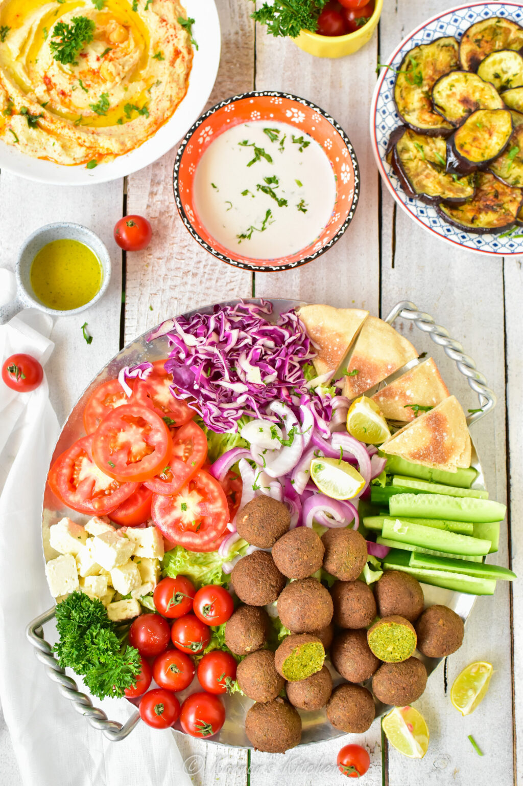

HUMMUS AND FALAFEL

Hummus is a creamy Middle Eastern dip made from chickpeas, tahini, lemon
juice, and garlic. It is commonly served with pita bread, vegetables, or as
part of a mezze platter.
Ingredients:
- 1 can (15 oz / 425 g) chickpeas, drained
- 1/4 cup tahini
- 2 tbsp lemon juice
- 1 clove garlic
- 2 tbsp olive oil
- 2 to 4 tbsp water
- 1/2 tsp salt
- Paprika for garnish (optional)
Steps to follow:
- Add the chickpeas, tahini, lemon juice, garlic, olive oil, and salt to a food processor.
- Blend until smooth.
- Add water a little at a time until the desired consistency is reached.
- Taste and adjust seasoning if needed.
- Transfer to a bowl and drizzle with olive oil.
- Garnish with paprika and serve.
← Back to Recipes